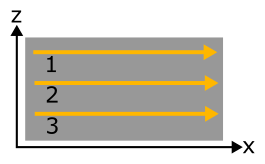

Explanations of Scan dimension handling#
The scan dimensions are organized following the data structure. Both in the case of individual files and of container files (e.g. Hdf5), individual frames from a multi-dimension scan are acquired and stored in a linear manner. The scan dimensions must be set up to allow pydidas to extract the multi-dimensional coordinate from the single frame number.
The number of scan dimensions starts with 0, in accordance with Python’s convention of zero-based indexing. The first scan dimension is therefore referred to as dim_0, the second as dim_1, and so on.
For a 2-dimensional scan which uses the motors A and B, the structure would be:
n = 0
for i in dim_0_points:
move motor A to position(i)
for j in dim_1_points:
move motor B to position(j)
acquire image n
n = n + 1
The frame index n is not explicitly defined but usually incremented by the detector
control software. However, it is also implicitly defined through
n(i, j) = i * number(dim_1_points) + j. Pydidas follows the convention of defining
scan dimension 0 as the slowest and scan dimension n-1 in a n-dimensional scan as
the fastest.
Example#
Consider the following example of a two-dimensional mesh scan in x and z: Three line scans with 6 points each in x inside a loop over 3 z positions:
Programmatically, this scan is written as:
n = 0
for i_z in [0, 1, 2]:
move z-motor to position z(i_z)
for j_x in [0, 1, 2, 3, 4, 5]:
move x-motor to position x(j_x)
acquire image n
n = n + 1
The (detector) frame numbers n are given by incrementing a global index,
starting with n = 0:
Because x is iterating faster than z, it is considered the fast axis and must be put as the second scan dimension (scan dim #1 in pydidas) to be consistent with the programmatical scan order.